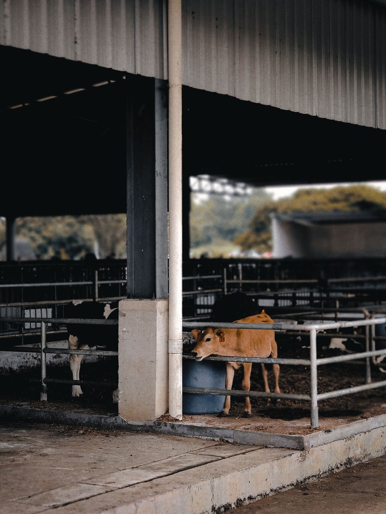
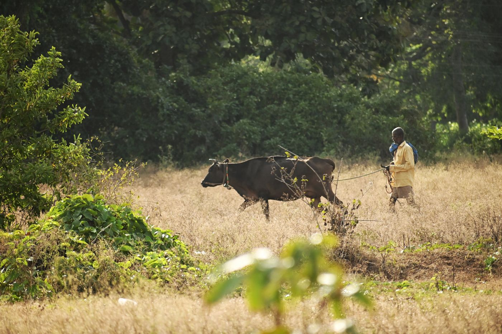
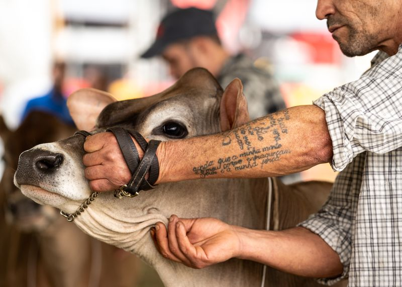
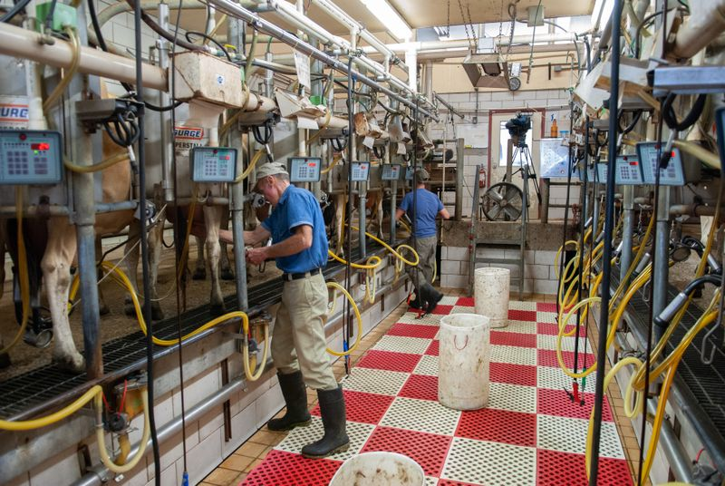
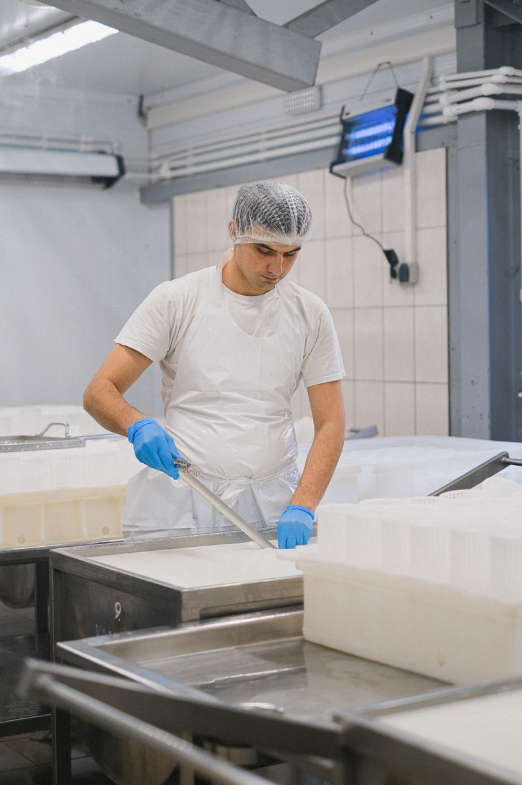
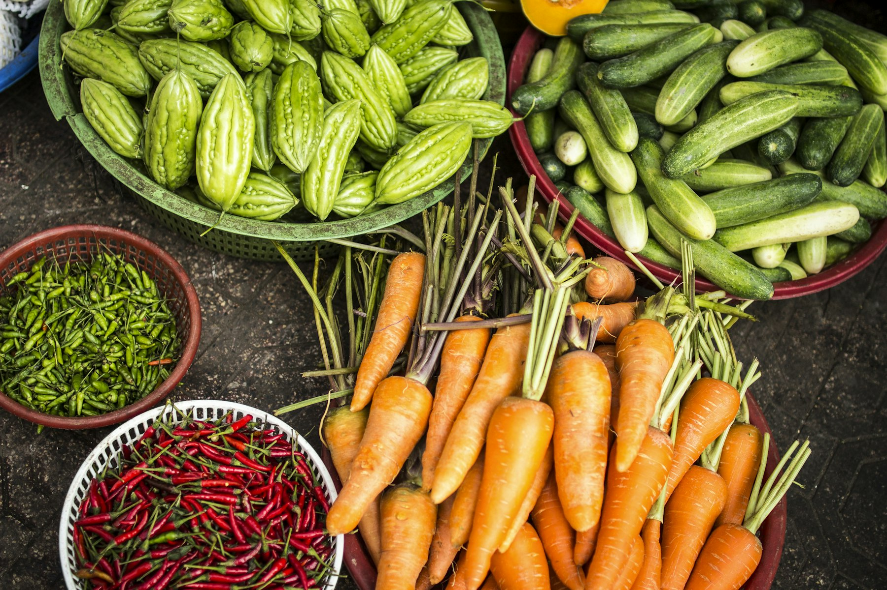

Anaikatti · 24 km
Kannan's pasture
Forty-six cows, 28 acres of rotated grass and a shade canopy that predates the farm. Kannan has supplied Meadowly since our first month.
We work with three family farms within 90 kilometres of Coimbatore. No consolidated supply chains, no anonymous tankers. Just a short road and a relationship we can name.


Every cap carries a batch code. Enter it in your dashboard, or ask us, and we can tell you the farm, the collection time, the chilling log and the person who signed for it.
Small enough to know every animal. Serious enough to invest in soil, water and shade.

Forty-six cows, 28 acres of rotated grass and a shade canopy that predates the farm. Kannan has supplied Meadowly since our first month.

Three neighbouring families raising a registered Gir herd. Calves stay with their mothers, and the milk is collected once each morning.

A small highland farm where the grass is slower and the mornings are colder. Selvi's milk makes our cultured butter and aged cheese.
From the first milking to the first pour, every step has a time, a temperature and a person responsible.

Every animal is inspected before milking. The first pulls go into a strip cup, never the collection pail.

Milk drops to 4°C within 45 minutes in a plate chiller. Nothing is added, and nothing is removed.

Fat, protein, temperature and antibiotic screening. If it is a question mark, it does not move forward.

Glass bottles are filled, capped and loaded into the cold van. The first route leaves at 6:10.

We keep a sample from every batch for six months. If a customer calls about a bottle, we can go back to the exact farm and collection. Quality is not just a test; it is a record.
We don't call ourselves sustainable because of a sticker. We measure the small things: soil cover, water use, glass returns and what the farm looks like in ten years.
